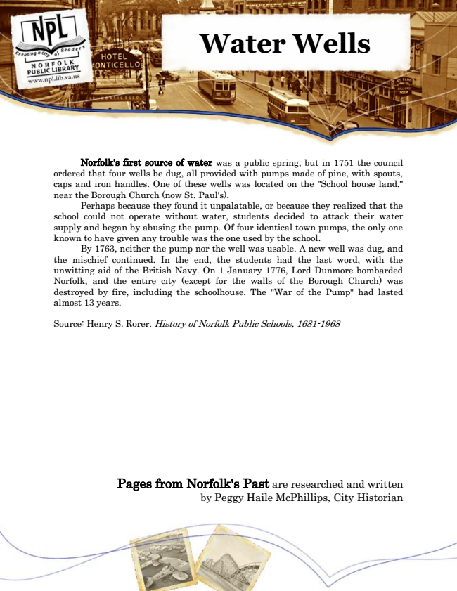

Water Wells
Norfolk's first source of water was a public spring, but in 1751 the council ordered that four wells be dug, all provided with pumps made of pine, with spouts, caps and iron handles. One of these wells was located on the "School house land," near the Borough Church (now St. Paul's).
Perhaps because they found it unpalatable, or because they realized that the school could not operate without water, students decided to attack their water supply and began by abusing the pump. Of four identical town pumps, the only one known to have given any trouble was the one used by the school.
By 1763, neither the pump nor the well was usable. A new well was dug, and the mischief continued. In the end, the students had the last word, with the unwitting aid of the British Navy. On 1 January 1776, Lord Dunmore bombarded Norfolk, and the entire city (except for the walls of the Borough Church) was destroyed by fire, including the schoolhouse. The "War of the Pump" had lasted almost 13 years.
Source: Henry S. Rorer. History of Norfolk Public Schools, 1681-1968
Pages from Norfolk's Past are researched and written by Peggy Haile McPhillips, City Historian